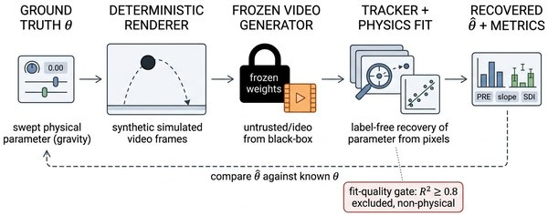

PhysWeep: Does a Video Generator Realize the Physics You Ask For?

In one sentence. A label-free audit that recovers the physical parameter a video generator actually realizes from its pixels, revealing that open image-to-video models lock onto seed-dependent wrong values instead of the requested physics.
Abstract
Image-to-video generators are often credited with absorbing physical dynamics as implicit world models, a claim the community currently checks with plausibility scores that ask whether a clip looks consistent with real-world motion. Plausibility is the wrong test on its own, because a clip can look natural while encoding the wrong value of the governing physical parameter, and no existing benchmark measures this gap directly. PhysWeep closes it with a fixed, label-free audit, treating a frozen generator as a black box, recovering the realized parameter from generated pixels, and reporting how often generation is trackable at all, how far the realized value sits from the requested one, and which, if either, of the literature's two proposed failure mechanisms the data support. A deterministic-simulator positive control confirms every score is exactly checkable. Applied to three open generators across six sweep axes, PhysWeep finds a specific, reproducible, previously undocumented failure. Conditional on producing trackable motion, two of the three generate confident, well-fit dynamics that converge to one of a small number of fixed, wrong values selected by the sampling seed rather than by the request, reproducing across two independent model families, two physical systems, and an independent tracker. It matches neither the prior reversion nor the case-based clamping the literature anticipates, because the reversion target is seed-conditional rather than a single global default, and a leave-one-out selection rule rejects both; the in-range faithfulness slope is statistically indistinguishable from zero wherever a response is estimable at all. A benchmark averaging over seeds would never see this: each sample is confidently locked to a wrong constant, exactly the failure a plausibility score is structurally blind to. We release the protocol, suite, and analysis code.
BibTeX
@article{khanbayov2026physweep,
title = {PhysWeep: Does a Video Generator Realize the Physics You Ask For?},
author = {Khanbayov, Rasul and Kurban, Hasan},
journal = {arXiv preprint arXiv:2609.06207},
year = {2026}
}